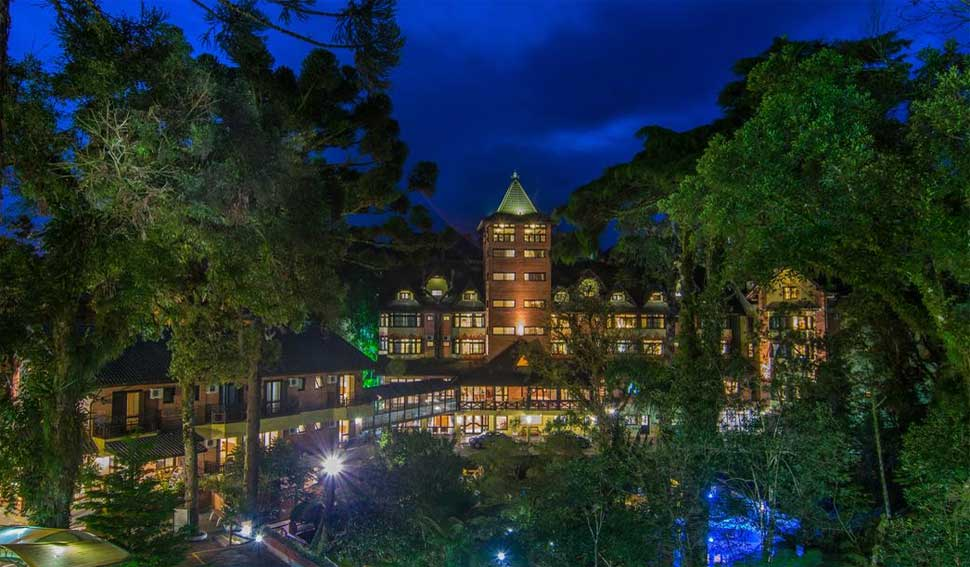
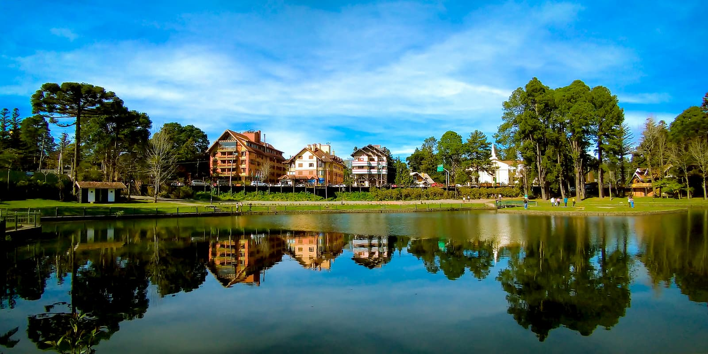
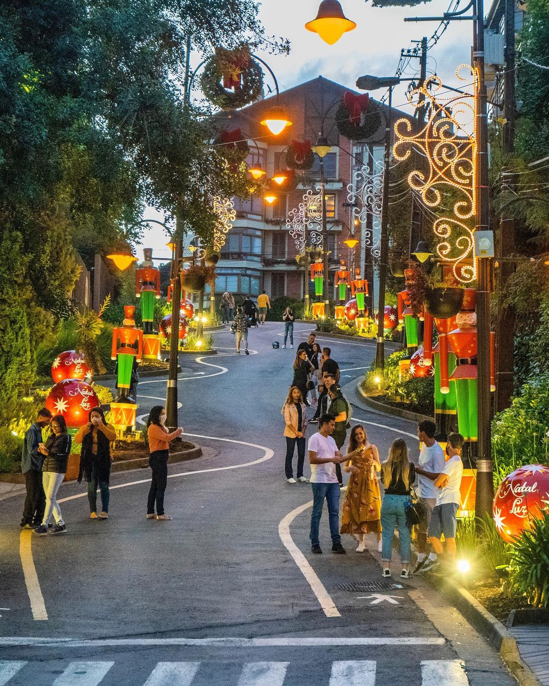
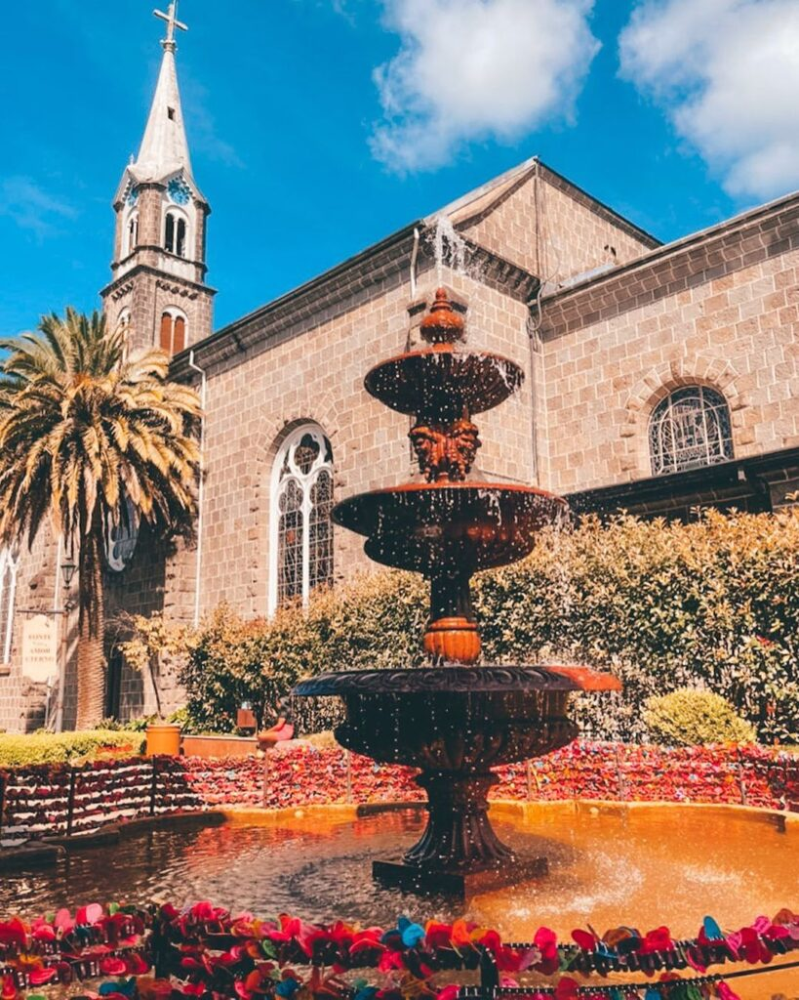

Gramado Pontos Turisticos
Inicio
O que fazer
Gramado Pontos Turisticos
Inicio
O que fazer
Se você quer conhecer a Serra Gaúcha mas só tem alguns dias. Preparamos um roteiro para você curtir ao máximo o tempo que passar, Lembre-se sempre de que a Serra Gaúcha é cheia de eventos sazonais como o Natal Luz, Festival de Cinema e outros
Para começar seus dias em Gramado, nada melhor do que fazer alguns passeios gratuitos pela cidade. Gramado é encantadora e todos os momentos por lá vão te deixar maravilhados. Unimos parques que têm localizações próximas para facilitar a sua logística, afinal a gente gosta mesmo é de praticidade, né? Sendo assim, você vai começar o dia se encantando no Le Jardin - Parque de Lavanda, onde uma variedade de plantas exóticas vai te deixar de queixo caído! Em seguida, passe pelo pitoresco Lago Joaquina Rita Bier, um lugar maravilhoso para fazer uma caminhada e apreciar a paisagem. Logo após, é hora de conhecer a Rótula das Bandeiras, tirar fotos lindas para guardar recordações.
Na Praça das Etnias, aproveite para saborear os quitutes tradicionais e, para finalizar seu passeio, tire lindas fotos e divirta-se nas curvas da Rua Torta.
O segundo dia é cheio de lugares considerados “ícones de Gramado” para você aproveitar muito. O dia começa com um passeio pela charmosa Rua Coberta, e se estamos falando de lugares icônicos, essa rua é um deles. Com uma beleza única, a rua vai te encantar. Se você for em datas comemorativas, prepare-se para um show de decoração! A próxima parada é o Palácio dos Festivais, onde acontece o famoso Festival de Cinema de Gramado. Se você der sorte, pode coincidir com a semana do festival de cinema e aproveitar muito! Para os românticos de plantão, uma parada necessária é a Fonte do Amor Eterno, onde você poderá viver um momento único com o amor da sua vida!
